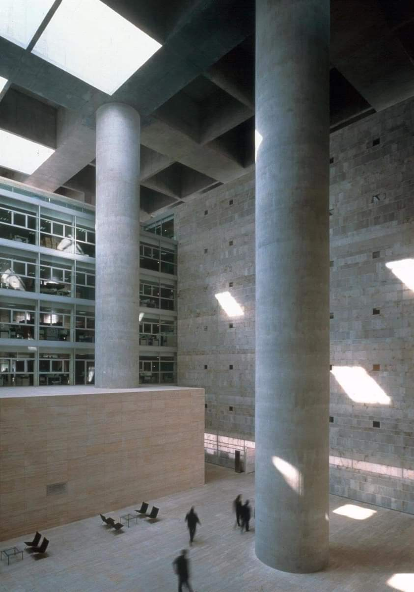
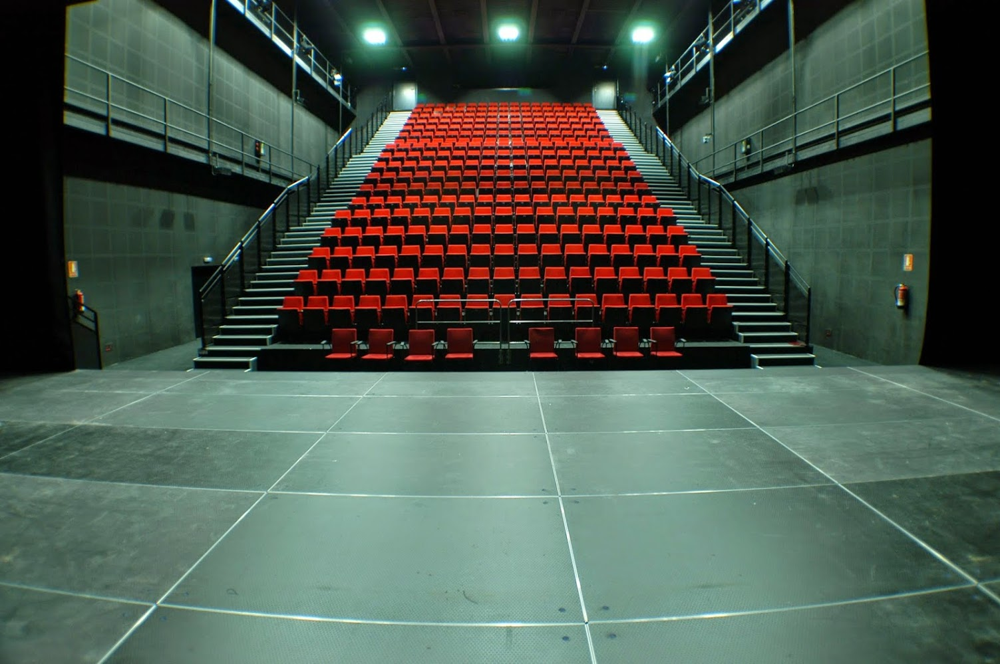
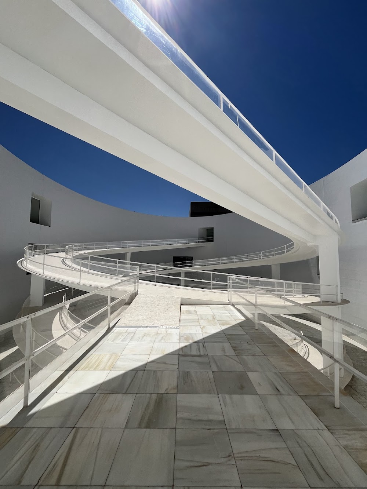
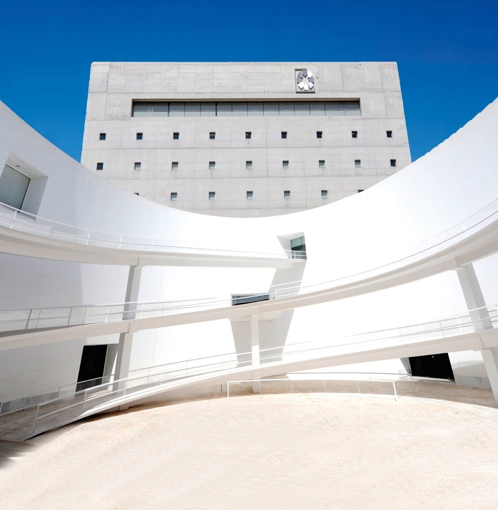

Locations
Granada City Center & Modern Architecture
Historic streetscapes where aged architecture contrasts sleek modern lines, offering visual interest, lighting, composition, and everyday movement to create an authentic lived-in backdrop.
Locations
Historic streetscapes where aged architecture contrasts sleek modern lines, offering visual interest, lighting, composition, and everyday movement to create an authentic lived-in backdrop.
Historic streetscapes where aged architecture contrasts sleek modern lines, offering the best visual interest, lighting and composition, everyday movement to create an authentic lived-in backdrop.



